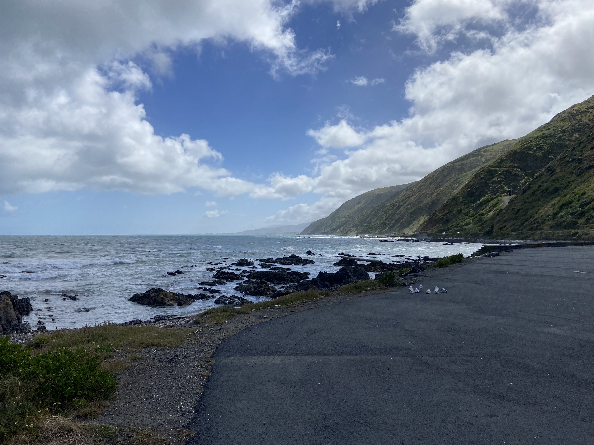

Post Card
Subscribe here
Welcome to this web site demonstration.
This site will be used to demonstrate how to look behind the scenes on an existing
web site to see how it is built and will serve as an example for a site you will create.
But first, what is a web site and what is digital media?
What is digital media?


Ok... So what is media?
Media includes a lot of things but are usually images, text, audio, video and databases. When combined together this means media includes animations, movies, web series, TV, radio, games, books, podcasts, news articles, websites, instruction manuals and more.
Media is basically everything we create, change, share, view and store. Digital media is everything we create, change, share, view and store using an App or website.
What is a website?
A web site is a collection of web pages linked to a single name, such as google.com, or learncoach.com. This name is called a Domain Name and you can get one for each of your own web sites, usually for a small annual price.
A web page is what you are viewing right now. A single digital media page designed to be viewed in an app called a web browser.